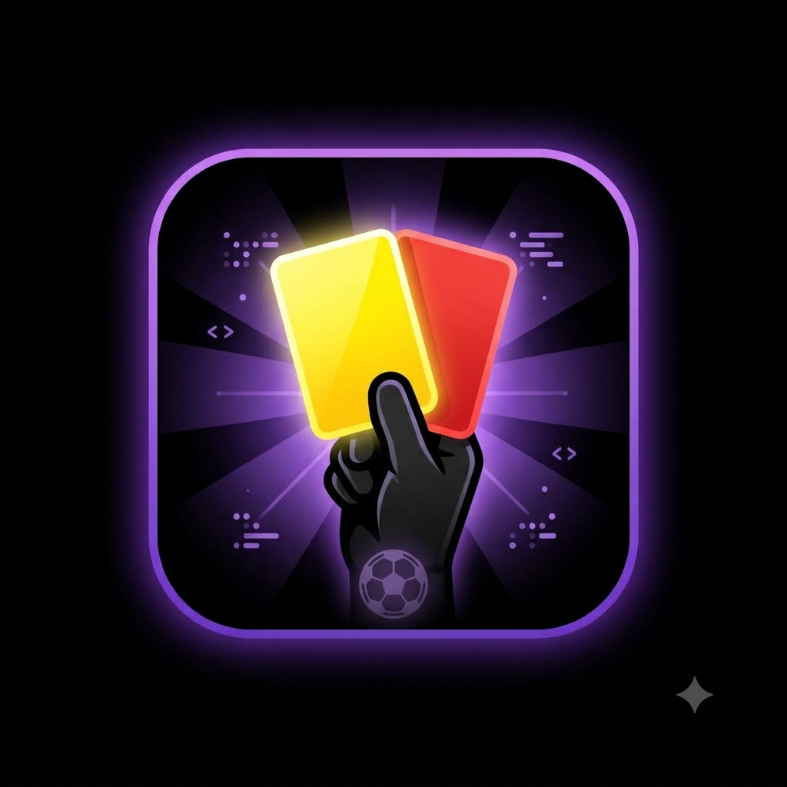
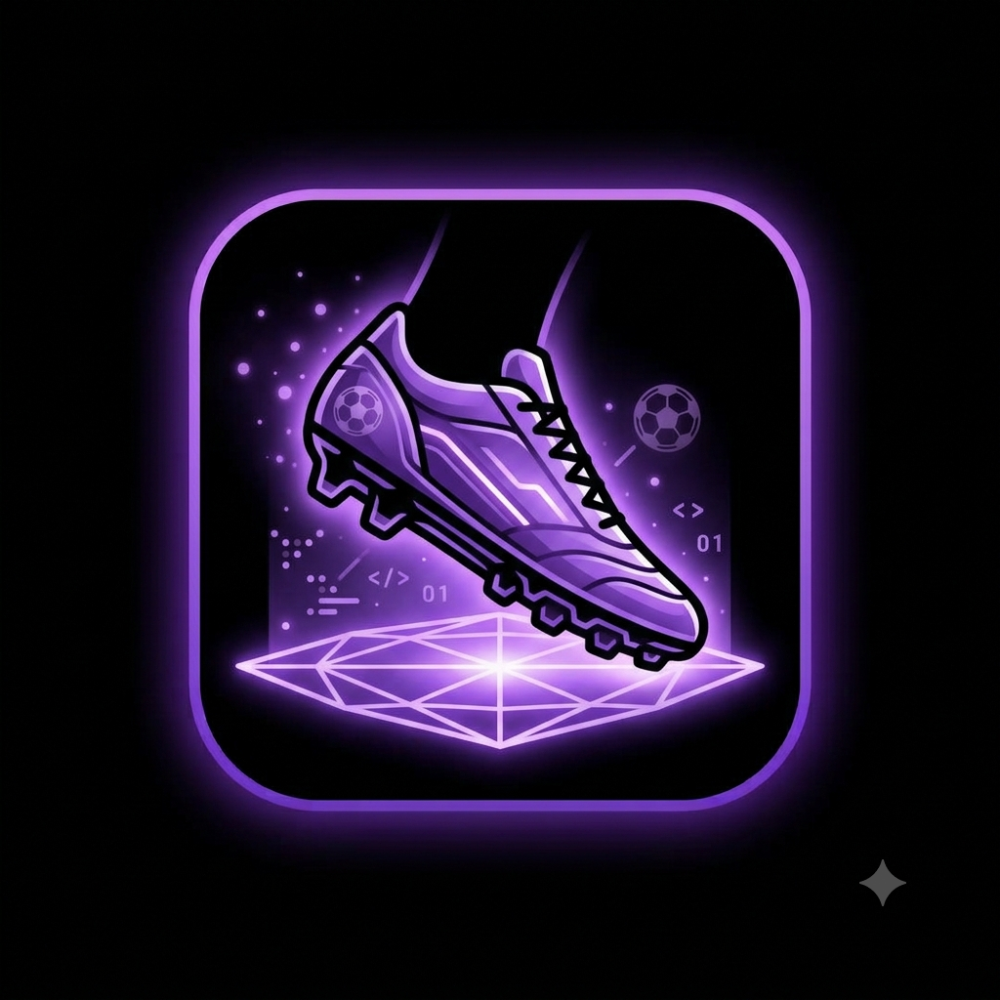

Bem-vindos ao meu blog!
Por: Roger Fernando da Silva
Boas-vindas ao meu novo blog! Aqui vou compartilhar curiosidades, notícias e histórias marcantes do futebol mundial.
Vou compartilhar novidades, histórias e curiosidades sobre o mundo do futebol
Por: Roger Fernando da Silva
Boas-vindas ao meu novo blog! Aqui vou compartilhar curiosidades, notícias e histórias marcantes do futebol mundial.
Por: Roger Fernando da Silva
O design com gomos pretos e brancos foi criado para a Copa de 1970 para facilitar a visualização da bola nas transmissões de TV em preto e branco.
Fonte: FIFA

Por: Roger Fernando da Silva
Os cartões amarelo e vermelho foram criados pelo árbitro Ken Aston para a Copa de 1970 para superar barreiras de idioma entre juízes e jogadores.
Fonte: CBF

Por: Roger Fernando da Silva
Antigamente, as chuteiras eram pesadas, feitas de couro rígido e pesavam quase meio quilo. Hoje, os modelos usam tecnologia sintética superleve.
Fonte: Lance!

Por: Roger Fernando da Silva
O Árbitro Assistente de Vídeo (VAR) começou a ser testado oficialmente em 2016 e mudou a forma como impedimentos e lances polêmicos são analisados.
Fonte: Globo Esporte

Por: Roger Fernando da Silva
O Rungrado 1º de Maio, localizado na Coreia do Norte, é o maior estádio do mundo com capacidade para mais de 114 mil torcedores.
Fonte: Guinness World Records